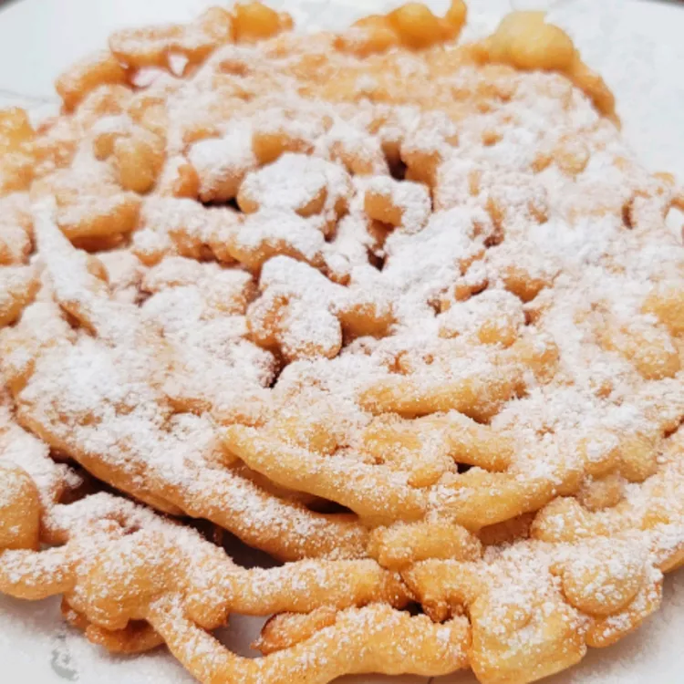

Funnel Cakes Recipes

Description
This funnel cake recipe will let you enjoy a delicious old-fashioned treat without going to a county fair. You'll need a funnel with a 1/2-inch opening that can hold a cup of batter.
You don't need to go to the carnival to enjoy a good funnel cake! This homemade funnel cake recipe is the real deal.
Ingredients
- 1 quart vegetable oil for frying, or as needed
- 1 ½ cups milk
- 2 large eggs
- 2 cups all-purpose flour
- 1 teaspoon baking powder
- ½ teaspoon ground cinnamon
- ½ teaspoon salt
- ¾ cup confectioners' sugar
Directions
Step 1
- Heat oil to 375 degrees F (190 degrees C) in a heavy skillet.
Step 2
- Beat milk and eggs together in a large bowl. Combine flour, baking powder, cinnamon, and salt in a separate bowl; stir into egg mixture until smooth.
Step 3
- Use your finger to cover the funnel hole; pour in 1 cup of batter. Starting in the center of the skillet, remove your finger and move the funnel in a swirling motion to make a 6- or 7-inch round. Fry in hot oil until bottom is golden brown; flip and continue cooking until golden brown all over, about 1 minute per side. Drain on paper towels. Continue cooking remaining batter.
Step 4
- Sprinkle with confectioners' sugar and serve warm.
Home Next Page